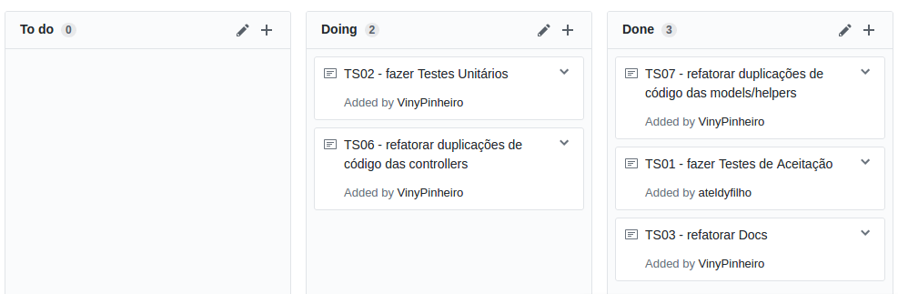

Essa é a metodologia adotada no início da release e poderá sofrer mudanças. Essas mudanças serão apresentadas na sprint que ocorreu no link Planejamento na sessão Mudanças quando houver.
1. Scrum
1.1. Papéis
Papéis no desenvolvimento de software significa uma ocupação, uma responsabilidade. Cada papel representa uma parte da metodologia ágil e isso faz com que ela funcione. Cada papel tem responsabilidades distintas onde todos juntos fazem com que as diversas partes dessa metodologia funcionem harmoniosamente.
Os papéis utilizados serão:
-
Scrum Master: Será representado a cada Sprint por um membro, preferencialmente aluno de GPP. O Scrum Master é responsável por garantir que os princípios do Scrum sejam seguidos, auxiliar o time com problemas que estejam afetando a equipe e garantir o bom desenvolvimento da sprint, acompanhando, cobrando e solucionando problemas que os desenvolvedores estejam tendo. O Scrum Master precisa estar presente, full-time, para o Time de desenvolvimento e para o Product Owner. Estando presente o mesmo sabe na hora dos obstáculos que podem impedir o trabalho do time, garantindo entrega de valor.
-
Product Owner: Será representado por um membro da equipe que será responsável pelo contato com os stakeholders, trazendo informações de decisão e auxilio para o time. O Product Owner gerencia o backlog, priorizando-o e atualizando-o, valida os incrementos do produto a cada Sprint, escreve junto aos stakeholders as User Stories e desenvolve para os stakeholders o processo que ditam as User Stories da Sprint corrente.
-
Tracker: Será representado a cada Sprint por um membro, preferencialmente aluno de GPP. O Tracker acompanha, nos pull requests, a qualidade de código, verificando as métricas, a qualidade dos testes e com isso dando o feedback constante para que os desenvolvedores possam em seus entregáveis terem maior qualidade de código evitando atividades futuras de refatoração. Sua função é também auxiliar o time para atingir a qualidade de código esperada e auxiliar o Scrum Master nas tomadas de decisão.
-
Time de Desenvolvimento: Será representado pela equipe de GPP e MDS. O Time é responsável por desenvolver as histórias de usuário, testá-las, coletar e analisar métricas de código a fim de garantir a qualidade do produto, se autogerenciar através dos eventos do Scrum (Planejamento, Retrospectiva e Review da Sprint, além da Reunião Diária) e dos kanbans, quadros de conhecimento, pareamento, presença, entre outros.
1.2. Daily Meeting
As reuniões diárias ocorrerão segundo a disponibilidade do Scrum Master da sprint corrente, sendo que estas serão comunicadas no dia anterior de sua ocorrência e deverão acontecer todos os dias exceto sábado, pois é nossa reunião semanal, e domingo, pela dificuldade de encontro do time.
1.3. Sprint Review
A sprint review ocorrerá todos os sábados às 9h:00 na UnB - campus Gama. Nela ocorrerá o fechamento da sprint corrente, abordando os resultados da sprint e sua retorspectiva.
2. XP
2.1. Pareamento
A técnica de pareamento não será sempre obrigatória. Ela será aplicada apenas para o nivelamento de conhecimento do time. Ela não será obrigatória para que o time tenha uma maior liberdade de desenvolvimento em casos onde o encontro da dupla não seja possível, tendo em vista o âmbito acadêmico, onde nem todos os membros tem todos os dias livres.
2.2. Integração Contínua
Para a integração contínua será utilizado o travis-ci, que implementa a verificação do build e do teste unitário. Ele será executado em todas as branchs do projeto e pode ser acompanhado aqui
3. Kanban
Foi utilizado o kanban para que o time pudesse ter um controle e monitoramente melhor do fluxo de trabalho. A ferramenta adotada foi o project deste github. O fluxo foi dividido em To do que é onde estavam as atividades planejadas para a sprint corrente, Doing que é onde as atividades em andamento estavam, atividades em andamento englobam protótipo, desenvolvimento, testes e revisão. O Done são as atividades concluídas, revisadas e aprovadas pelo Product Owner.
